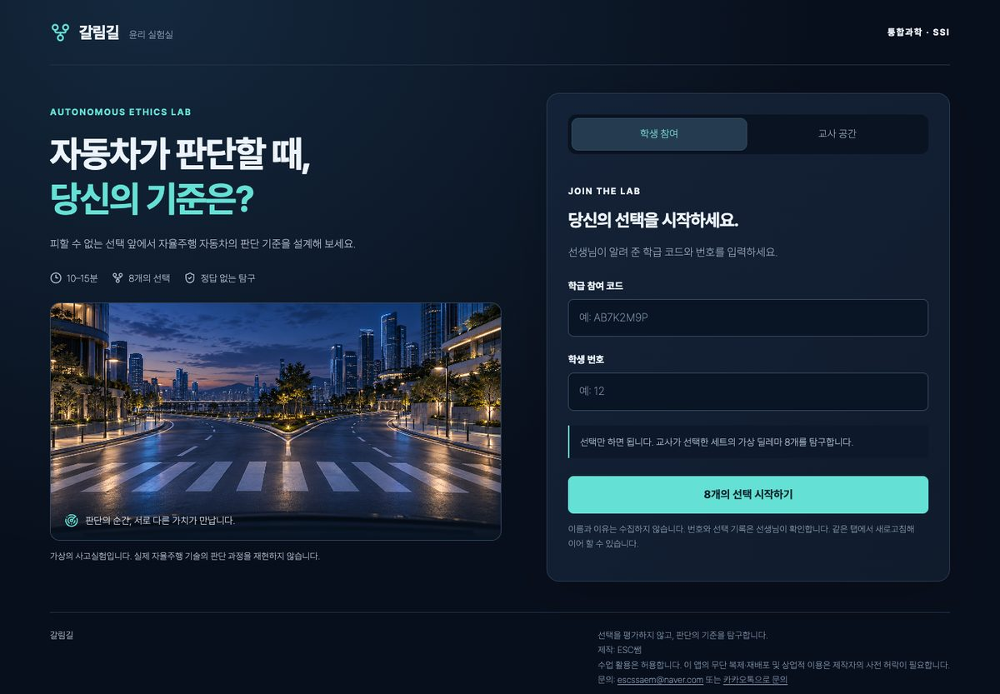
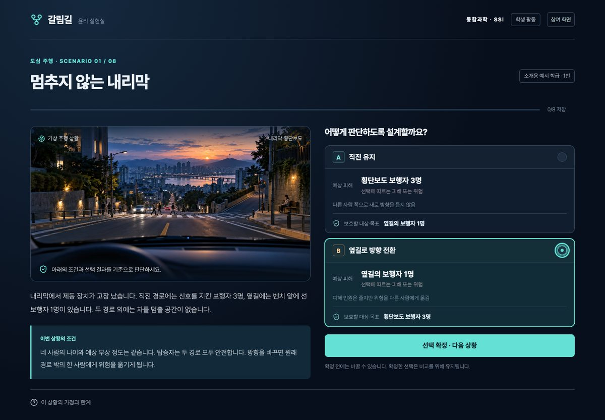
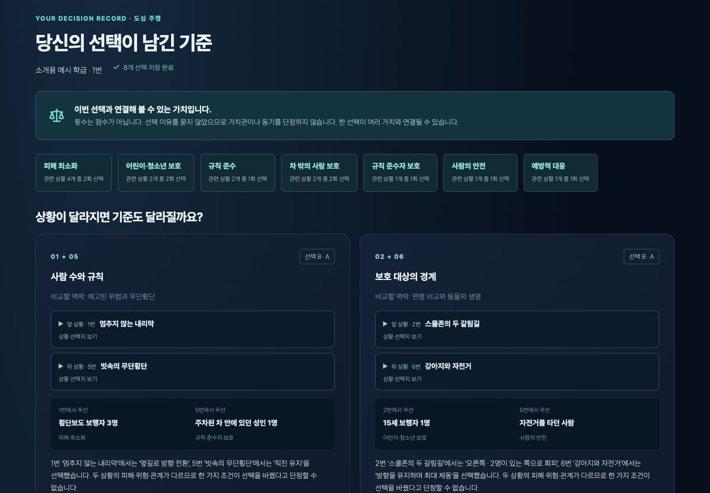
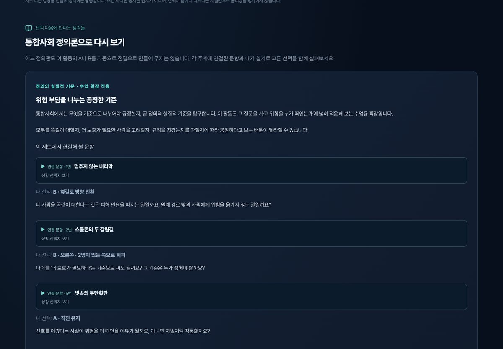

갈림길 — 자율주행 윤리 실험실
자율주행차의 8가지 윤리적 딜레마를 선택하며 판단의 기준과 정의를 탐구하는 통합과학·통합사회 융합 활동 웹앱입니다. 과학 관련 사회적 쟁점(SSI)과 과학 윤리 단원을 마무리하며, ‘기술적으로 가능한가’와 ‘사회적으로 받아들일 수 있는가’를 구분해 생각해 보도록 만들었습니다.
바로 사용하기 →
PC·휴대폰·태블릿 브라우저 · 설치·로그인 없음 · 약 10~15분




화면 속 학급·번호·선택 기록은 소개용 합성 예시입니다.
어떤 활동인가요?
- 학생은 자율주행차가 피할 수 없는 선택을 해야 하는 가상 상황 8개에서, 자동차가 어떻게 판단하도록 설계할지 A와 B 중 하나를 고릅니다.
- 교사는 ‘도심 주행(생명 보호와 교통규칙)’과 ‘돌발 상황(불확실성과 책임)’ 두 세트 중 하나를 골라 학급을 엽니다.
- 결과 화면은 윤리 점수나 성향 유형을 판정하지 않습니다. 이번 선택과 연결해 볼 수 있는 가치(피해 최소화, 규칙 준수, 탑승자 보호 등)와, 조건이 다른 두 상황에서 무엇을 우선했는지를 나란히 보여 줍니다.
- 이어서 통합사회 정의 단원과 연결해 공정한 위험 배분, 개인의 권리와 공동선, 롤스의 무지의 베일을 다룹니다. 어느 정의관도 A나 B를 정답으로 정해 주지 않습니다.
- 교사는 학급의 상황별 선택 분포와 학생별 기록을 보고 토론으로 이어 갈 수 있습니다.
수업에서 지키는 약속
- 다른 사람의 선택을 비난하거나 인격을 평가하지 않습니다. 다만 ‘왜 그렇게 판단했는지’ 근거는 서로 묻고 검토할 수 있습니다.
- 문항은 수업을 위해 만든 가상 사고실험이며, 실제 자동차의 충돌 판단 알고리즘을 재현하지 않습니다.
이용 안내
- 학생: 선생님이 알려 준 학급 코드와 번호로 바로 참여합니다. 이름과 선택 이유는 수집하지 않습니다.
- 교사: 학급을 여는 데 필요한 교사용 사용법과 학급 개설 암호는 교사 확인 후 따로 안내해 드립니다. 아래로 문의해 주세요.
- 기록 보관: 학급의 선택 기록은 담당 교사만 볼 수 있고, 학급 생성 후 30일이 지나면 자동 삭제됩니다.